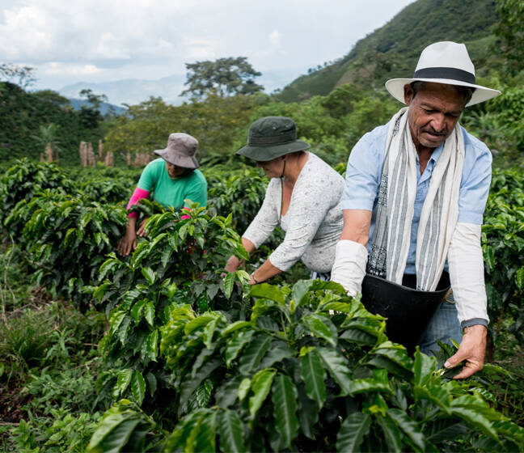

About Ceres Coffee
Fresh, Organic and Small Batch roastery located in the heart of Coquitlam BC. Working with farmers to grow the best product is the key to the best outcome. We take full pride in the coffee we produce and we would love to take you on the journey together!
A Small Batch Coffee Farm
About The Farm
- Organic
- Family Owned
- Ethically Sourced
- Supporting Local Workers
Local Roasteries To Support!
Here is a list of local coffee shops and roasteries to support in your next coffee run. They all source and import only the best beans. Show them some love! Click on the links below to pay them a visit